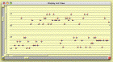
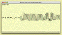

Siren Web Page
Navigation Bar
Siren Introduction
Screen Shots
Sound Examples
What's New?
Down-loads
Documentation
External Libraries for Sound, MIDI, FFT, etc.
Building Siren in VisualWorks
MODE and Siren
Still more doc
Off-site links
STP's Home Page
HeavenEverywhere
FASTLab
